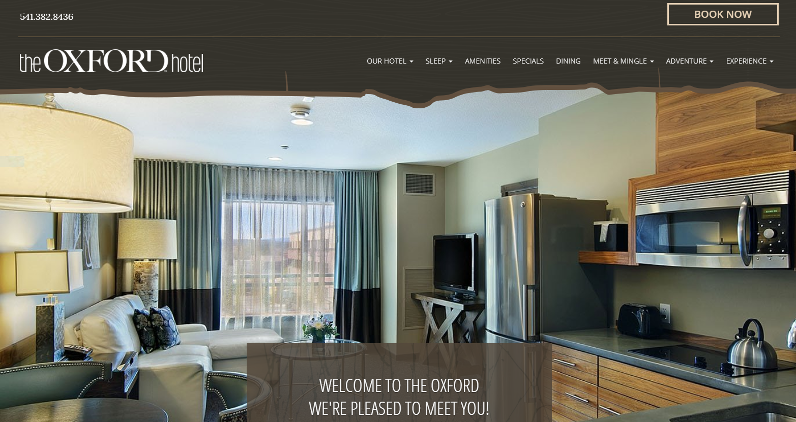
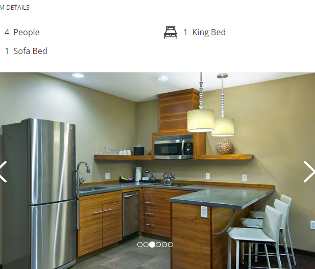
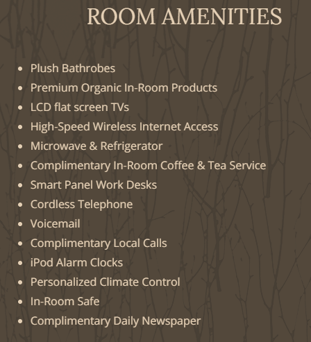
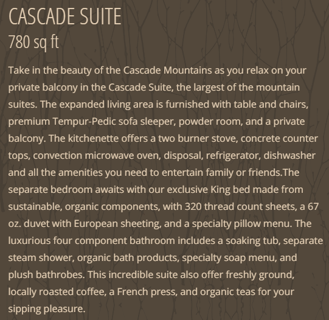
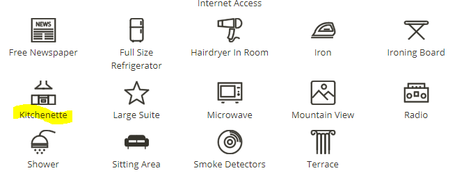
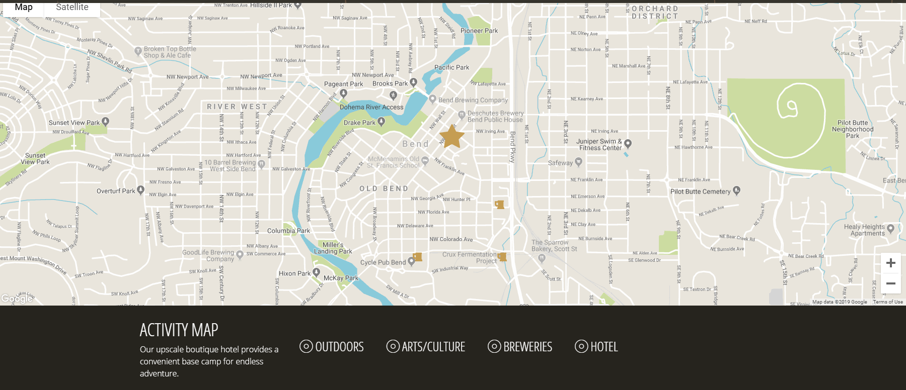
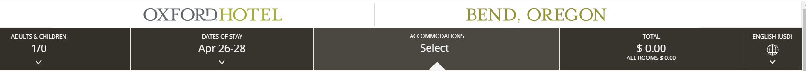

For this assigment, I asked testers to navigate the website for The Oxford Hotel, a boutique hotel in Bend, Oregon.
Testers:
- Ages 18-24 and 40-60
Purpose of Test:
- The main purpose of this test was to examine the general navigability of this site and the room search feature in particular.
The testers first took a look at the home page and gave their initial impressions. They were then posed a few scenarios to test:
- You are looking for a room with a kitchen for 1 adult for 2 nights with specific dates. How would you search for a room?
- Can you find out if this hotel is near any activities or attractions?
- Can you find out what dining options are available onsite and offsite?
Home Page: Overall Impressions
 Oxford Hotel home page
This site was easily identifiable as a hotel website. Most of the scrolling pictures on the home page are of the hotel rooms and there is a prominent "Book Now" button in the upper right hand corner. Scrolling down, more images appear as well as a map that indicates the hotel's location in Bend, Oregon.
The images for this site are mostly of food and drink, outdoor scenes, music, and young adults. The testers all made positive comments about the map. One tester thought the site had a certain "vibe" and that the hotel was geared towards young people with money to spend. One tester did not like the horizontal scrolling images on the main page. Otherwise, they all seemed impressed with the size and quality of the images, and overall seemed to think it was a visually appealing site.
Scenario 1: Find a room with a kitchen for 1 adult for 2 nights in April.
The testers were all able to accomplish this task through different methods.
One tester went straight to the Book Now button and after a brief perusal of the rooms descriptions, started scrolling through the pictures until they found a picture of a kitchen. This tester muttered "words words words" while quickly scanning the text and commented that they were drawn to images and usually looked at these first.
 Oxford Hotel Room Search Image of KitchenetteAnother user found the Rooms option under the drop down menu after clicking Sleep on the horizontal menu bar. They spent some time reading through the amenties to find a kitchen. The first room that appeared, the Cascade Suite, actually does have a kitchenette but in the bulleted list under amenities only lists a refrigerator and microwave. The user thought this did not equal a kitchen so kept searching.
 Oxford Hotel Room Cascade Suite Amenities ListAfter returning to the main menu, returning to Rooms, and looking at other rooms, the tester eventually read the text for the Cascade Suite where "kitchenette" and the usual appliances are mentioned and also saw the image that eventually scrolled through which showed a kitchen and was now confident this room included a kitchen.
 Cascade Suite description
Another tester started with the Rooms option. Not having any luck here, next tried "Extended Stay". These rooms had kitchens but also had a 6 night minimum stay. This tester went back to Home and tried "Book Now" with specific dates. This time the tester noticed there was an option to View Room Details and Enhancements with each room. Clicking on this link brought up icons and an icon for "kitchenettes" when applicable.
 Oxford Hotel Room Search Image of Icons/Kitchenette highlightedScenario 2: What activities or attractions are nearby?
The testers were able to accomplish this task.
Two testers tried to use the back button to get back to the home page from a rooms submenu. This didn't work. One eventually clicked on the hotel logo/home button in upper left, commenting that that they didn't know why they knew to do this - that it was "intuitive". Once on the home page, the tester scrolled down to images in the middle of the page of Mt. Bachelor, Jazz, Explore Bend. They started exploring the map and were pleasantly surprised that when "Breweries" underneath the map was clicked, mug icons appeared on the map to show the location of breweries in the area. They spent some time clicking the other icons.
 Interactive map feature with Breweries selectedThe other tester who tried the back button eventually closed the submenu to return to the home page. They then tried links on the main menu which displayed activities by season or experiences by events.
Another tester used the logo to return home and used then clicked on the Adventure and Experience buttons in the main menu to find activities. Some links took you to an outside site for Bend in a new page; the tester could easily return to the hotel website by closing the window.
Scenario 3: Are there places to eat out nearby?
The website prominently displays images of food and drink for the onsite restaraunt. The testers were easily able to find information about the onsite restaurant. One tester was not sure at first that the restaurant was onsite, but eventually determined that it was. This tester did not find any information on other dining options besides the hotel restaurant and assumed this information wasn't available. One tester went back to the map and breweries, then tried the Experiences button and Explore downtown which brought up a list of dining options. One tester speculated that the hotel might be making outside dining options harder to find in order to highlight the onsite restaurant.
Usability Summary
The Oxford Hotel website was readily identifiable as a site for a hotel that is trying to appeal to an outdoorsy, music loving, and/or brewery/wine loving clientele who would be interested in staying in a boutique hotel in Bend. The main navigation menu is clearly labeled and works well. The map is a welcome and helpful feature. Searching and booking rooms by date and number of guests is straightforward. Finding roooms with particular amenities is doable for a motivated user, but did cause some frustration.
A suggestion for improvement would be to allow users to choose the amenities they want and filter their search by amenities.
Returning home from the reservations page seemed to trip testers up. The back button didn't work here. Users can click on the logo to return home, but it does not react as obviously "clickable". The far background changes color on hover, but this seems too subtle for most users to notice.
Another suggestion would be to make it easier to return to the main menu from an abandoned reservation. Navigation at the top of Reservations Page
It was interesting to see the youngest tester relying almost solely on images to find information. The older testers were willing to spend more time reading text. Photos and icons were helpful features for finding information on this website.
If I were to do this testing again, I would make booking a room the last task since in real life someone without any knowledge of this hotel would probably explore location, activities, and dining options before booking a room. The tester would then be a little familiar with the site before doing the main task. I don't think this would have made finding a room with a kitchen any easier though.